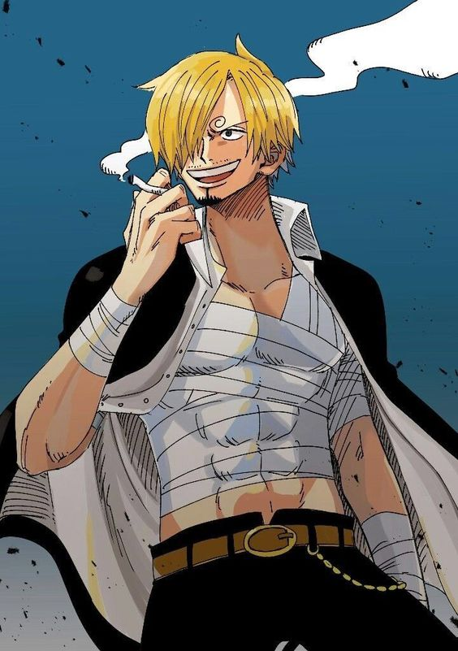
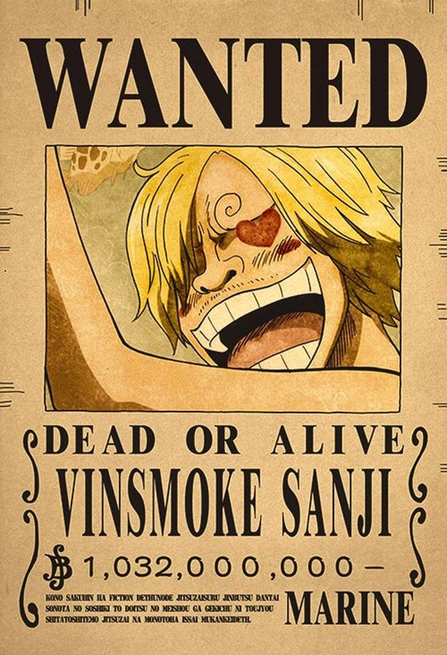
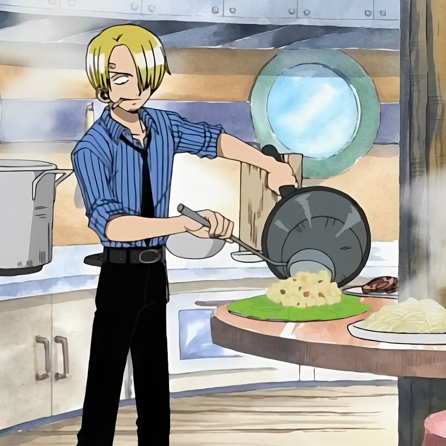
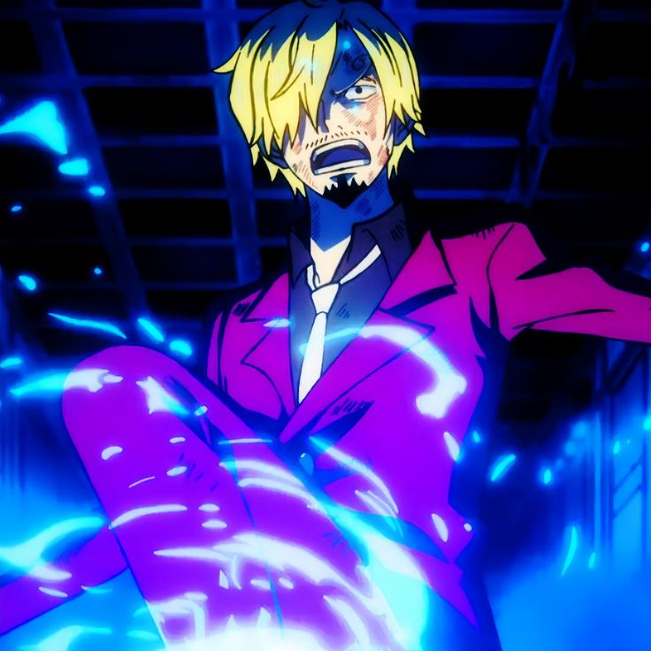

Sanji

{kind=link}
También conocido como "Sanji el Cocinero Negro", es uno de los personajes principales de One Piece y un miembro vital de los Piratas del Sombrero de Paja. Es reconocido por su habilidad culinaria excepcional y su dominio en las artes marciales. Sanji es un apasionado chef y su sueño es encontrar el mar legendario conocido como "All Blue", donde se dice que todos los océanos del mundo se juntan y se encuentran todas las especies marinas. Como cocinero del barco, Sanji es responsable de preparar deliciosas comidas para la tripulación y garantizar su bienestar nutricional.

{kind=link}
En cuanto a sus habilidades de combate, Sanji es un experto en el estilo de lucha "Black Leg" o "Pierna Negra", que se caracteriza por su uso habilidoso de las patadas. Sanji es increíblemente ágil y puede desatar una serie de ataques acrobáticos y poderosos con sus piernas. Además, es conocido por su gran velocidad y su capacidad para esquivar los ataques enemigos. Sanji también posee una gran cantidad de fuerza y resistencia, lo que le permite enfrentarse a enemigos formidables. A menudo utiliza tácticas astutas en la batalla y muestra un gran dominio de las técnicas de combate. Además, tiene una debilidad particular: nunca pelea con mujeres, lo que muestra su respeto por el género femenino.

{kind=link}
Sanji es famoso por su galantería hacia las mujeres y su habilidad para flirtear con ellas. Tiene una personalidad refinada y elegante, y es conocido por su cabello rubio y su ojo oculto bajo una ceja. A pesar de su apariencia atractiva y su actitud jovial, Sanji también tiene momentos serios y muestra una gran determinación y dedicación hacia sus amigos y la tripulación. Sanji es un cocinero talentoso, un experto en artes marciales y un miembro crucial de los Piratas del Sombrero de Paja. Su estilo de lucha distintivo, su personalidad encantadora y su dedicación hacia sus compañeros hacen de Sanji un personaje querido y respetado en la serie One Piece.

{kind=link}